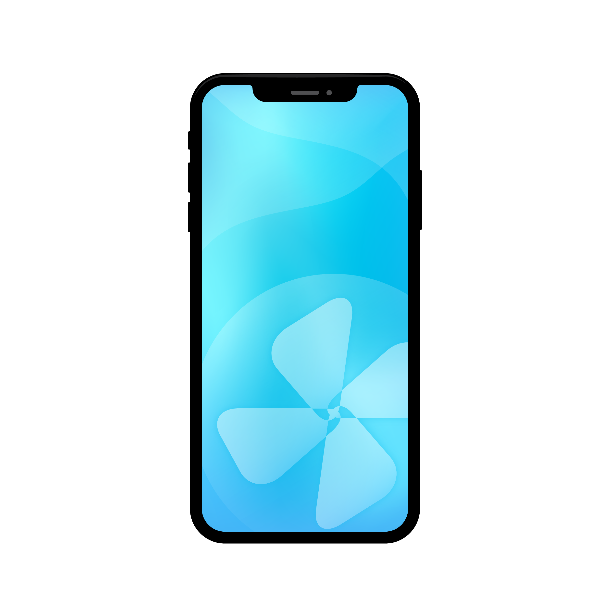

任务列表
{{item.id === 1? "默认演示任务": item.status === 1 ? "当前执行：" + item.start_time : "历史任务：" + item.start_time}}
可选设备（下载启动sdk后，系统会自动获取你的电脑上连接的设备）：

{{ phone.manufacturer }} {{ phone.model }}
Platform: {{ phone.platform }}
Memory: {{ phone.memory }}
Storage: {{ phone.storage }}
选择app：
版本号： {{version}}
下载android-sdk-window-sdk
下载android-sdk-mac-sdk
开始任务
停止任务
暂无图片